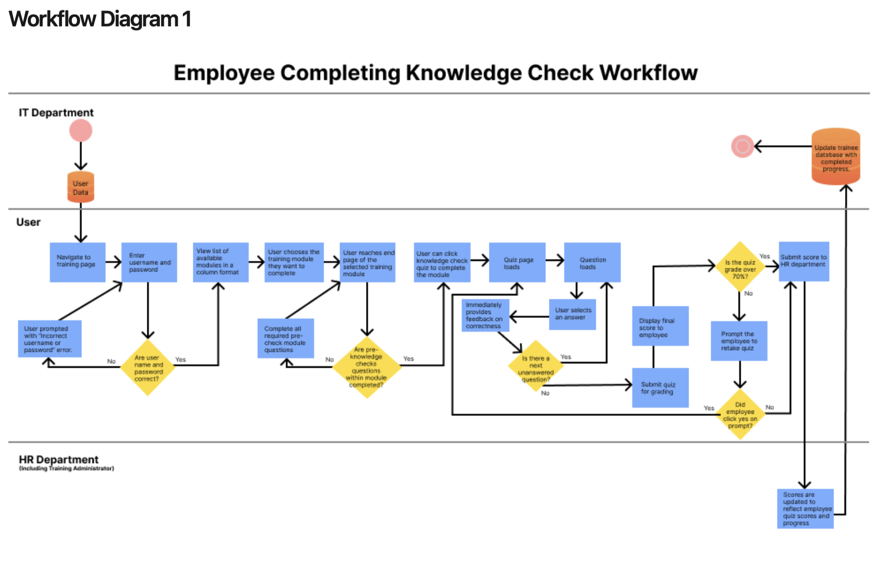
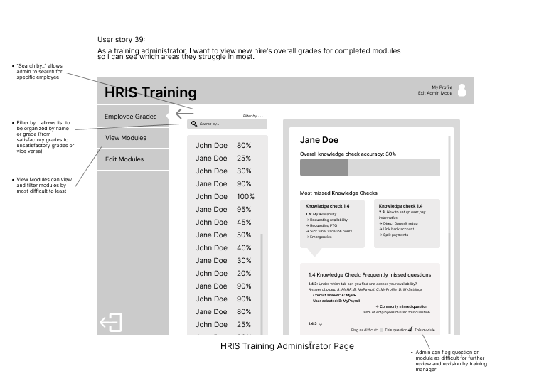
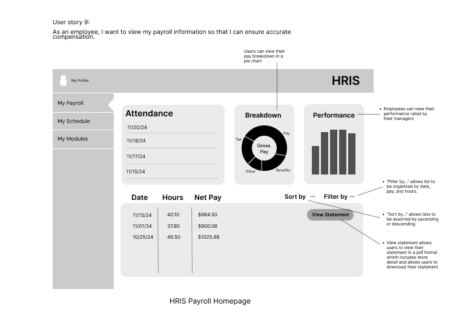
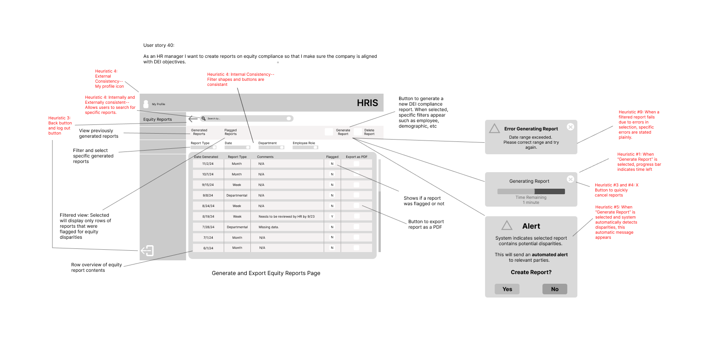
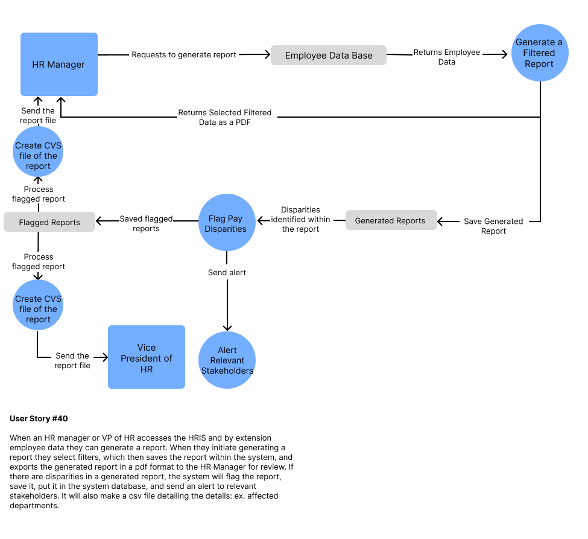

Centralized HRIS Strategy for Equitable Compensation
INFO 380 · Product & Information Systems Management · University Project
This project was completed as part of a senior-level Product and Information Systems Management course. The objective was to identify a structural enterprise problem and design a fully specified solution supported by functional requirements, non-functional constraints, risk modeling, and phased rollout planning.
Although academic in origin, the case was structured as if advising an enterprise client. The focus was governance design, compensation logic, compliance automation, and enterprise risk mitigation.
Full Technical Documentation: View Complete Documentation
Organizational Context
Global Retail United (GRU) operates over 4,000 stores in more than 50 countries. Compensation decisions were distributed across regional HR teams, payroll administrators, and local managers.
Systems were fragmented. Regions relied on independent spreadsheets, inconsistent performance criteria, and manual reconciliation processes. At enterprise scale, fragmentation introduces measurable structural risk.
- Inconsistent evaluation logic across departments
- Manual compensation adjustments without centralized audit visibility
- Delayed compliance reporting
- Higher probability of payroll errors
The problem was not payment execution. The problem was the absence of standardized governance.
Problem Definition
Compensation inequity often emerges from vague performance standards and disconnected reporting systems rather than explicit intent. Without structured inputs and monitoring, small inconsistencies compound over time.
- U.S. Bureau of Labor Statistics (2023): women earned 83.6% of men's wages
- UK law mandates wage gap reporting for companies with 250+ employees
- Equal pay litigation has resulted in multi-million dollar settlements
At enterprise scale, unmonitored compensation logic becomes a legal, financial, and reputational risk.
The product objective became clear: introduce centralized governance, standardize compensation inputs, and automate disparity detection.
Product Strategy
Standardized Compensation Inputs
Performance descriptors were converted into structured evaluation fields. Compensation adjustments require documented justification tied to defined metric categories.
Central Governance Layer
Rather than replacing payroll systems, a coordination layer integrates with existing platforms and normalizes compensation data across regions.
Automated Disparity Monitoring
Statistical variance checks compare compensation across similar roles. Flagged discrepancies generate compliance-ready reports automatically.
Embedded Security
- AES-256 encryption
- Role-based access controls
- Multi-factor authentication
- Audit logging
Phased Rollout
- Phase 1: Data normalization and security foundation
- Phase 2: Regional onboarding
- Phase 3: Advanced equity analytics automation
Workflow: Employee Knowledge Checks
This workflow defines how employees complete training modules, how scores are captured, and how results are escalated to HR.

Figure 1. End-to-end employee knowledge check process.
User Story 33: As a new employee, I want to complete knowledge checks after each training module so I can confirm my understanding.
The system captures results automatically, updates HR dashboards, and flags insufficient scores for retake. This aligns with organizational compliance and workforce readiness goals.
Wireframe: HRIS Training Dashboard

Figure 2. Training administrator dashboard interface.
User Story 39: As a training administrator, I want to review overall grades to identify knowledge gaps.
Administrators can filter results, flag difficult modules, and review trends across employees. This supports continuous training improvement.
Wireframe: Payroll Transparency

Figure 3. Payroll homepage with breakdown and attendance view.
User Story 9: As an employee, I want to view payroll details to verify compensation accuracy.
The interface centralizes attendance, net pay, and breakdown data. It improves transparency and reduces administrative clarification requests.
Wireframe: Equity Compliance Reporting

Figure 4. Compliance reporting and automated flagging interface.
User Story 40: As an HR manager, I want to generate equity reports to ensure compliance with DEI objectives.
Reports can be filtered, generated, exported, and automatically flagged for disparities. Flagged reports trigger alerts and audit trails.
Data Flow Architecture

Figure 5. Data collection, processing, and reporting architecture.
This diagram illustrates how employee data is retrieved, filtered, analyzed for disparities, stored securely, and escalated to relevant stakeholders.
Automated flagging reduces manual oversight dependency and improves auditability.
Product Management Reflection
The core challenge was not feature design. It was defining governance structure and sequencing implementation to reduce risk while maintaining operational continuity.
- Integration versus replacement
- Automation versus oversight
- Standardization versus regional autonomy
- Speed versus adoption stability
Enterprise systems decisions influence compliance exposure, financial risk, and organizational trust. Clear requirements and structured rollout planning determine execution success.